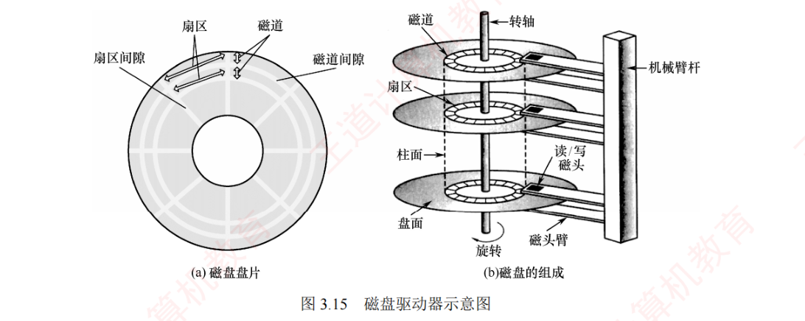
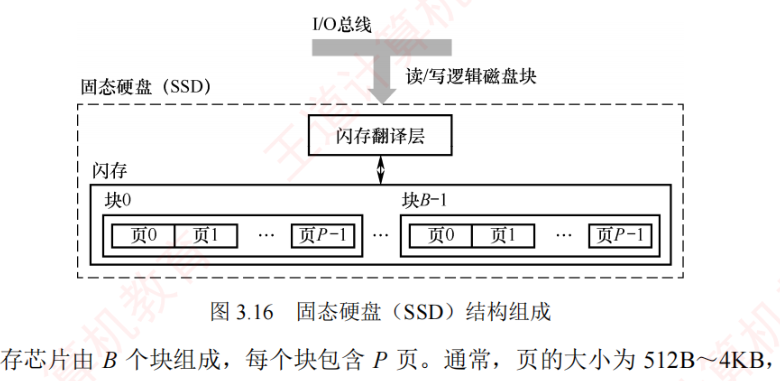

3.4 外部存储器
外部存储器对应考纲「外部存储器」一条，两大件：磁盘存储器（3.4.1，机械、按柱面-盘面-扇区组织）与固态硬盘 SSD（3.4.2，闪存、按块-页组织）。本节是计算题粮仓——磁盘容量、存取时间、数据传输率、磁盘地址划分都有固定公式，SSD 的磨损均衡则是概念题热点。
3.4.1磁盘存储器
磁盘存储器采用磁盘作为存储介质，具有以下优点：① 存储容量大，成本低；② 支持数据的重复写入和删除；③ 能长期保存信息，即使断电也能存档；④ 读取操作是非破坏性的，无须再生数据。缺点：存取速度较慢、机械结构复杂以及对工作环境要求较高。
1. 磁盘设备的组成
- 磁盘驱动器：驱动磁盘旋转并通过磁头在盘面上执行读/写操作（见图 3.15）；
- 磁盘控制器：磁盘驱动器与主机之间的接口，负责接收并解析来自 CPU 的命令，向磁盘驱动器发送控制信号，同时监控其运行状态。

磁盘的存储区域由多个记录面组成，每面包含若干同心磁道，每条磁道划分为若干扇区：
- 记录面：表示磁头数量，每个磁头负责一个记录面数据的读/写（记录面数 = 磁头数）；
- 柱面：所有记录面上相同编号的磁道构成一个柱面（柱面数 = 每个记录面的磁道数）；
- 扇区：每条磁道所包含的扇区数量。扇区是磁盘读/写的最小单位。相邻磁道和扇区之间用特定间隙隔开，以防止读/写冲突。扇区按固定圆心角度划分，导致从外到内道密度增加，磁盘的存储能力受限于最内圈磁道的最大记录密度。
此外还有磁盘高速缓存（Disk Cache）：在内存中开辟一块区域，用于暂存待写入磁盘的数据。优点：磁盘以「簇」（由若干连续扇区组成）为单位进行写操作，缓存可减少频繁的小块写入；中间结果若在写回前被多次使用，可直接从缓存读取，提升效率。
2. 磁记录原理
当磁头和磁性记录介质发生相对运动时，通过电磁转换实现数据的读/写操作。写过程：按特定的编码方法，将二进制数据序列转换为磁层中对应的磁化翻转状态序列，以便读/写控制电路高效、可靠地完成写入与读出。
3. 磁盘的性能指标
（1）记录密度：指单位面积上可存储的二进制数据量，通常以道密度、位密度和面密度表示——道密度是沿磁盘半径方向单位长度上的磁道数；位密度是单位磁道长度上记录的二进制位数；面密度 = 道密度 × 位密度，反映单位面积的存储能力。
（2）磁盘的容量：分为非格式化容量和格式化容量。
- 非格式化容量 = 记录面数 × 柱面数 × 每道磁化单元数（磁记录表面上可利用的磁化单元总数）；
- 格式化容量 = 记录面数 × 柱面数 × 每道扇区数 × 每扇区字节数（按特定格式组织后实际可用的存储容量）。
（3）响应时间与存取时间：磁盘处理一次读/写请求的完整过程包括请求排队、控制信息解析以及三个物理操作：寻道、旋转等待和数据传输。因此总响应时间为
$$\text{响应时间} = \text{排队处理时间} + \text{寻道时间} + \text{旋转等待时间} + \text{数据传输时间}$$其中，「寻道时间 + 旋转等待时间 + 数据传输时间」也称为存取时间，特指从磁头定位开始到数据传输完成的时间，是衡量磁盘性能的核心指标。
- 寻道时间：磁头移动到目标磁道所需时间。平均寻道时间通常取最大寻道时间的一半（从最外道到最内道时间的 1/2）；
- 旋转等待时间：目标扇区旋转至磁头下方所需时间。平均旋转等待时间等于磁盘旋转半周的时间；
- 数据传输时间：读取或写入一个扇区所需时间，取决于磁盘转速和数据密度。
（4）数据传输速率：指磁盘在单位时间内向主机传送的数据量（单位为 B/s）。若磁盘转速为 \(r\) 转/秒，每条磁道容量为 \(N\) 字节，则最大数据传输速率为
$$D_t = rN$$4. 磁盘地址
例如，磁盘有 16 个盘面，每个盘面有 256 个磁道，每个磁道划分为 16 个扇区，则每个扇区的地址可用 16 位二进制代码表示：柱面号占 8 位（\(256 = 2^8\)），盘面号占 4 位（\(16 = 2^4\)），扇区号占 4 位（\(16 = 2^4\)）。
5. 磁盘的工作过程
磁盘的主要操作包括寻址、读盘和写盘，每种操作对应一个控制字。磁盘工作时，首先读取控制字，然后执行相应控制字。由于磁盘是机械式部件，因此读/写操作为串行执行，不可并行。
6. 磁盘阵列（RAID）
- RAID0：无冗余、无校验的磁盘阵列。将连续的多个数据块交叉存放在不同物理磁盘的扇区上（条带化技术），利用多磁盘并行读/写，不仅扩展了磁盘容量，还显著提高了存取速度，但不具备容错能力；
- RAID1：镜像磁盘阵列。两个磁盘同步执行读/写操作，互为镜像备份；一个磁盘故障时，可从另一磁盘完整读取数据，代价是有效容量减半（两盘仅当一盘使用）；
- RAID2：采用海明码进行纠错的磁盘阵列；
- RAID3：位交叉奇偶校验的磁盘阵列；
- RAID4：块交叉奇偶校验的磁盘阵列；
- RAID5：无独立校验的分块式奇偶校验磁盘阵列。
总结：RAID 通过多磁盘并行工作提升数据传输速率，通过镜像提高可用性，通过校验提高容错能力。
3.4.2固态硬盘
1. 固态硬盘的特性
固态硬盘（SSD）是一种基于闪存技术的存储设备，存储介质与 U 盘类似，但容量更大、存取性能更优。一个 SSD 由一个或多个闪存芯片以及闪存翻译层组成（见图 3.16）：闪存芯片替代了传统磁盘中的机械驱动器；闪存翻译层负责将 CPU 发出的逻辑块读写请求翻译为对底层物理页的读/写控制信号——闪存翻译层相当于扮演了磁盘控制器的角色。

一个闪存芯片由 \(B\) 个块组成，每个块包含 \(P\) 个页。通常，页的大小为 512B～4KB，每块包含 32～128 页，块的大小为 16KB～512KB。读/写操作以页为单位进行；擦除操作以块为单位进行——只有在整块数据擦除后，才能向其中的页写入新数据；一旦某块被擦除，其所有页均可重新写入一次。每个块的擦写次数有限，经过若干次重复擦写后，该块会因磨损而失效。
随机写入速度较慢，主要有两个原因：① 擦除操作耗时较长，通常比访问慢一个数量级；② 若需修改一个已包含有效数据的页，必须将该块中所有有效页复制到一个新的（已擦除的）块中，再执行对该页的写入。
相较传统机械硬盘，SSD 由半导体器件构成，无机械运动部件，因此随机访问延迟极低，且无噪声、无振动、功耗更低、抗震性强、安全性更高。
2. 磨损均衡（Wear Leveling）
SSD 的主要缺点是闪存块的擦写寿命有限（通常仅几百至几千次）。若不加管理，读/写操作往往会集中在少数物理块上，导致这些区域迅速磨损——一旦这部分闪存损坏，整块 SSD 即告失效。这种磨损不均衡的情况，可能导致一块 256GB 的 SSD 仅仅因几千字节的闪存损坏而报废。为解决这一问题，SSD 引入了磨损均衡技术，主要分为两类：
- 动态磨损均衡：在写入数据时，优先选择累计擦写次数较少的空闲块，避免反复写入同一区域，从而将写入负载分散到更多物理块上；
- 静态磨损均衡：一种更高级的策略——即使没有新数据写入，控制器也会定期扫描并进行数据迁移，将磨损块中的有效数据迁移至低磨损块中，使高磨损块转为以读为主、低磨损块承担更多写入任务，进一步均衡整体磨损。